8.033 Problem Set 2, More Kinematic Effects of Relativity
French: 4-5
Q: A rocketship of proper length d travels at constant velocity v relative to
a frame S. The nose of the ship (A') passes the point A in S at t = t' = 0,
and at this instant a light signal is sent out from A' to B' (the end of the
ship). (a) When, b y rocketship time (t'), does the signal reach the tail (B')
of the ship? (b) At what time t1, as measured in S, does the signal reach the
tail (B') of the ship?
(c) At what time t2, as measured in S, does the tail of the ship (B') pass the
point A?
A: (a) In the rocket's frame, the light is emitted a proper length d from the origin traveling at c, so t' = d/c.
(b) In the rocket's frame, the event of the signal reaching the tail is represented by the quaternion . In frame S, the light is blueshifted because the rocket is approaching at a speed of -beta.
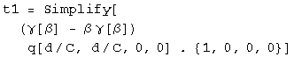
The time the signal arrives in frame S is 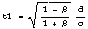.
(c) The length of the ship in frame S must be calculated first. Boost the ship's end at q[0, d, 0, 0] to frame S. The boost quaternion is .
![[Graphics:ps2gr7.
gif]](../../img/SR/problem_set_2/ps2gr7.gif)
The start of the ship will move for a time equal to the first term of the boosted quaternion, and moved by a distance x = vt/c.
![[Graphics:ps2gr8.
gif]](../../img/SR/problem_set_2/ps2gr8.gif)
The ship's length in frame S will be the difference at the same instant in this frame between the boosted ship end and translocated ship start.
![[Graphics:ps2gr9.
gif]](../../img/SR/problem_set_2/ps2gr9.gif)
![[Graphics:ps2gr10.gif]](../../img/SR/problem_set_2/ps2gr10.gif)
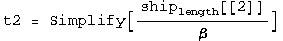
![[Graphics:ps2gr12.gif]](../../img/SR/problem_set_2/ps2gr12.gif)
The time the rocketship's tail arrives is in frame S.
French: 4-9
Q: Two spaceships, each measuring 100 m in its own rest frame, pass by each other traveling in opposite directions. The instruments on spaceship A determine that the front end of spaceship B requires 5 microseconds to traverse the full length of A. ( a) What is the relative velocity of the 2 spaceships? (b) A clock in the front end of B reads exactly one o'clock as it passes by the front end of A. What will the clock read as it passes by the rear end of A?
A: (a) Given a length and a time, divide one by the other to get the relative velocity.
![[Graphics:ps2gr14
.gif]](../../img/SR/problem_set_2/ps2gr14.gif)
![[Graphics:ps2gr15.gif]](../../img/SR/problem_set_2/ps2gr15.gif)
The relative velocity is 2 x 10^7 m/s.
(b) The proper time of the clock in rocketship B is the interval, which when using quaternions is the square root of the first term of the quaternion squared.
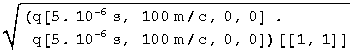
![[Graphics:ps2gr17.gif]](../../img/SR/problem_set_2/ps2gr17.gif)
The clock in rocket B reads one o'clock plus 4.99 microseconds.
French: 4-12
Q: At noon a rocketship passes the Earth with a velocity 0.8c. Observers on
the ship and on the Earth agree that it is noon.
(a) At 12:30 P.M. as read by a rocketship clock, the ship passes an
interplanetary navigational station that is fixed rel ative to the Earth and
whose clocks read Earth time. What time is it at the station? (b) How far from
the Earth (in Earth coordinates) is the station?
(c) At 12:30 P.M. rocketship time the ship reports by radio back to Earth.
When (by Earth time) does the Earth receive the signal?
(d) The station on Earth replies immediately When (by rocket time) is the
reply received?
Solve this problem TWICE, once using the Earth as a reference frame and then
using the rocket at the reference frame.
A: (a) From the Earth frame, we are given the proper time on the rocket clock as 30'. This interval is equal to the one seen by the Earth, which is calculated by squaring the quaternion and solving for t.
![[Graphics:ps2gr19.gif]](../../img/SR/problem_set_2/ps2gr19.gif)
The time on the Earth clock is 50 min.
(b) Multiply the time by the speed and get the units right.
![[Graphics:ps2gr20
.gif]](../../img/SR/problem_set_2/ps2gr20.gif)
![[Graphics:ps2gr21.gif]](../../img/SR/problem_set_2/ps2gr21.gif)
The distance is 7.2 x
![[Graphics:ps2gr22.gif]](../../img/SR/problem_set_2/ps2gr22.gif) meters.
meters.
(c) The time of the rocket emitting the signal, 50', plus its travel time from that location, 50' v/c = 40, is 90', or 1:30.
![[Graphics:ps2gr23
.gif]](../../img/SR/problem_set_2/ps2gr23.gif)
![[Graphics:ps2gr24.gif]](../../img/SR/problem_set_2/ps2gr24.gif)
(d) Find the intersection of the world line of the rocket, x/c = v t/c, and
the world line of the light emitted from the Earth at 90 min,
x/c = t - 90'.
![[Graphics:ps2gr25
.gif]](../../img/SR/problem_set_2/ps2gr25.gif)
![[Graphics:ps2gr26.gif]](../../img/SR/problem_set_2/ps2gr26.gif)
The position of the event is 450' v/c = 360'. We need the proper time of this interval, which will be the time on the rocket clock.
![[Graphics:ps2gr27
.gif]](../../img/SR/problem_set_2/ps2gr27.gif)
![[Graphics:ps2gr28.gif]](../../img/SR/problem_set_2/ps2gr28.gif)
At 4:30 rocket time, the light from the Earth will be received at the rocket.
A': Now from the rocket frame...
(a') From the rocket frame, we are given t=30', x = 0. We need to boost this
proper time interval to the Earth's frame.
![[Graphics:ps2gr29
.gif]](../../img/SR/problem_set_2/ps2gr29.gif)
The time in the Earth frame is 50 min.
(b') The distance from the Earth in the Earth's frame is the second term of the above quaternion. Convert 40 min to meters.
![[Graphics:ps2gr31
.gif]](../../img/SR/problem_set_2/ps2gr31.gif)
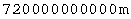
The distance is 7.2 x
![[Graphics:ps2gr33.gif]](../../img/SR/problem_set_2/ps2gr33.gif) meters.
meters.
(c') Find the intersection of the world line of the Earth, x/c = -v t/c, and the light emitted at 30', x/c = -t + 30.
![[Graphics:ps2gr34
.gif]](../../img/SR/problem_set_2/ps2gr34.gif)
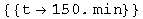
The position of this event is 150' v/c = 120'. We need the proper time of this interval, which will be the time on the Earth clock.
![[Graphics:ps2gr36
.gif]](../../img/SR/problem_set_2/ps2gr36.gif)
![[Graphics:ps2gr37.gif]](../../img/SR/problem_set_2/ps2gr37.gif)
At 1:30 Earth time, the light will be received from the rocket.
(d') It is 150' in the rocket frame when the Earth emits the signal. It will take 120' for the signal to arrive. 150' + 120' = 270' or 4:30.
![[Graphics:ps2gr38
.gif]](../../img/SR/problem_set_2/ps2gr38.gif)
![[Graphics:ps2gr39.gif]](../../img/SR/problem_set_2/ps2gr39.gif)
The same answer again!
R & H: 2-14 A slow airplane
Q: An airplane whose rest length is 40.0 m is moving at a uniform velocity with respect to the Earth at a speed of 630 m/s. (a) By what fraction of its rest length will it appear to be shortened to an observer on Earth? (b) How long would it take by Earth clocks for the airplane's clock to fall behind by 1 microsecond, assuming that only special relativity applies?
A: (a) Boost the plane's tail in the plane's frame to the Earth's frame by a speed of -630 m/s.
![[Graphics:ps2gr40
.gif]](../../img/SR/problem_set_2/ps2gr40.gif)
![[Graphics:ps2gr41.gif]](../../img/SR/problem_set_2/ps2gr41.gif)
Calculate the distance traveled by the nose in this amount of time.
![[Graphics:ps2gr43
.gif]](../../img/SR/problem_set_2/ps2gr43.gif)
Subtract the distance traveled by the nose from the tail. Take the ratio of this difference with the rest length.
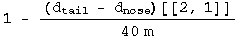
![[Graphics:ps2gr45.gif]](../../img/SR/problem_set_2/ps2gr45.gif)
The ratio of lengths as seen on the Earth is 1 minus this small number.
(b) We want to know the differential time between a boosted clock and one at rest. This is the first term of the difference between a boosted and unboosted clock.
![[Graphics:ps2gr47.gif]](../../img/SR/problem_set_2/ps2gr47.gif)
Set this equal to 1 microsecond and solve for t.
![[Graphics:ps2gr49.gif]](../../img/SR/problem_set_2/ps2gr49.gif)
![[Graphics:ps2gr50
.gif]](../../img/SR/problem_set_2/ps2gr50.gif)
The plane must travel for 4.53x10^5 s to get out of sync by a microsecond with the Earth, or 5.25 days.
R & H: 2-21 Travel to the galactic center!
Q: (a) Can a person, in principle, travel from Earth to the galactic center (which is about 28,000 lyr distant) in a normal lifetime? (b) What constant velocity would be needed to make the trip in 30 years (proper time)?
A: (b) Boost the rocketeer up to the BIG speed B=1-e, set the distance to the destination d, and solve for e.
Plug in numbers.
![[Graphics:ps2gr54
.gif]](../../img/SR/problem_set_2/ps2gr54.gif)
![[Graphics:ps2gr55.gif]](../../img/SR/problem_set_2/ps2gr55.gif)
The constant speed required to make the trip in 30 years is 1 - 5.7 x 10^-7 less than c. The answer to (a) is that as a purely mathematical exercise, one could say yes. However, this does not account for the energy required to reach such a speed. An analysis which investigated the energy requirements would probably conclude that it cannot be done.
R & H: 2-24 Decay in flight (II)
Q: The mean lifetime of muons stopped in a lead block in the laboratory is measured to be 2.2 microseconds. The mean lifetime of high-speed muons in a burst of cosmic rays observed from the Earth is measured to be 16 microseconds. Find the speed of these cosmic ray muons.
A: Boost the muon from its rest frame to the lab.
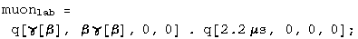
Set the time component of the quaternion equal to 16 microseconds.
![[Graphics:ps2gr58.gif]](../../img/SR/problem_set_2/ps2gr58.gif)
The muon is travelling 0.9905 c.
R & H: 2-25 Decay in flight (III)
Q: An unstable high-energy particle enters a detector and leaves a track 1.05 mm long before it decays. Its speed relative to the detector was 0.992c. What is its proper lifetime?
A: Boost the proper path of unknown length L by v/c = 0.992, solve for L given the lab length L'.
![[Graphics:ps2gr59
.gif]](../../img/SR/problem_set_2/ps2gr59.gif)
The average lifetime is 4.4 x
![[Graphics:ps2gr61.gif]](../../img/SR/problem_set_2/ps2gr61.gif) s.
s.
R & H: 2-26 Decay in flight (IV)
Q: In the target area of an accelerator laboratory there is a straight evacuated tube 300 m long. A momentary burst of 1 million radioactive particles enters at one end of the tube, moving at a speed of 0.80c. Half of them arrive at the other end wi thout having decayed. (a) How long is the tube as measured by an observer moving with the particles? (b) What is the half- life of the particles in this same reference frame? (c) With what speed is the tube measured to move in this frame?
A: (a) Same as above.
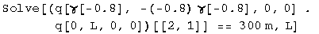
![[Graphics:ps2gr63.gif]](../../img/SR/problem_set_2/ps2gr63.gif)
The tube looks 180 m long to the moving particles.
(b) The length of the target is equal to one half life, t = L/v.
The half life is 750 nanoseconds.
(c) By symmetry, v = 0.8c. By calculation.
![[Graphics:ps2gr67.gif]](../../img/SR/problem_set_2/ps2gr67.gif)
The tube looks like it is moving 0.8c in the rest frame of the particles.
R & H: 2-28 Simultaneous - but to whom?
Q: An experimenter arranges to trigger two flashbulbs simultaneously, a blue
flash located at the origin of his reference frame and a red flash at x = 30
km. A second observer is moving at a speed of 0.25c in the direction of
increasing x, and also v iews these flashes. (a) What time interval between
them does he find?
(b) Which flash does he say occurs first?
A: (a) For the first observer, the blue flash stays at the origin. The red flash is boosted to a new location in spacetime.
![[Graphics:ps2gr69.gif]](../../img/SR/problem_set_2/ps2gr69.gif)
There will be 26 microseconds between the flashes.
(b) The origin won't change under the boost. From part (a) the flash of red light event will be changed to -26 microseconds. Therefore the red light appears first to the rocketeer.
R & H: 2-36 What time is it anyway?
Q: Observers S and S' stand at the origins of their respective frames, which are moving relative to each other with a speed of 0.6c. Each has a standard clock, which, as usual, they set to zero when the two origins coincide. Observer S keeps the S' clock visually in sight. (a) What time will the S' clock record when the S clock records 5 microseconds? (b) What time will observer S actually read on the S' clock when his own clock reads 5 microseconds?
A: (a) We must determine the proper time for a clock with t = 5 microseconds, and x = v t, by taking the square root of the first term of the event quaternion squared.
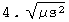
The S' clock will record 4 microseconds when the clock in S reaches 5 microseconds.
(b) The intersection of the worldline of the rocket, x/c = 0.6 t and a lightcone passing through t = 5 microseconds, x = 0 can be solved for t.
![[Graphics:ps2gr72
.gif]](../../img/SR/problem_set_2/ps2gr72.gif)
The S' clock will read the interval of the quaternion at this intersection. Calculate the interval as in part (a).
![[Graphics:ps2gr74
.gif]](../../img/SR/problem_set_2/ps2gr74.gif)
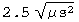
At 5 microseconds, the observer in frame S will actually see 2.5 microseconds on the S' clock.
Baranger: The cat's life
Q: A newborn cat is put aboard a ship leaving Earth for Andromeda at speed v =
0.6c. The cat dies on the ship at age 7 years. (a) How far from the Earth in
the Earth's frame is the ship when the cat dies? (b) A radio signal is sent
from the ship wh en the cat dies. When does this signal get to the Earth by
Earth time?
(c) Bonus: What is the probability amplitude that Schrödinger killed the cat?
A: (a) The proper time of the cat's life is 7 years. Boost it to the Earth's frame.
![[Graphics:ps2gr76
.gif]](../../img/SR/problem_set_2/ps2gr76.gif)
![[Graphics:ps2gr77.gif]](../../img/SR/problem_set_2/ps2gr77.gif)
In the Earth's frame, the cat died after traveling a distance equal to 5.25 years.
(b) It will take 5.25 years for the light to get back from the time when the
cat died (8.75 years), so the signal reaches Earth in
5.25 + 8.75 = 14 years.
(c) Schrödinger posed the question as a joke. He is definitely still laughing.
Baranger: A particle's life
Q: A particle moving with speed v = 0.99c goes on the average a distance 12.5 m before decaying. What is its proper lifetime?
A: Take the lifetime of the particle in its own frame, boost it to the lab's frame.
In the lab, x = 12 m. Set them equal, solve for the lifetime.
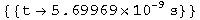
The lifetime is 5.7 ns.
Baranger: Trains & clocks
Q: The train is moving with a velocity v. At the head of the train, the engineer compares her clock C'1 with a stationary clock C1 outside as she passes it, and finds that both clocks read time zero. At the same moment (for the train frame) the cond uctor in the caboose compares his clock C'2 (which therefore also reads zero) with a stationary clock C2 he happens to be passing. What does C2 read? The distance between the clocks C'1 and C'2 measured by people on the train is L.
A: The interval for both sets of clocks is L/C. For the observer on the ground, set the time to t, the distance to vt/c. Square this quaternion, set the first term equal to the square of the interval, and solve for t.
![[Graphics:ps2gr81
.gif]](../../img/SR/problem_set_2/ps2gr81.gif)
![[Graphics:ps2gr82.gif]](../../img/SR/problem_set_2/ps2gr82.gif)
The clock will read
![[Graphics:ps2gr83.gif]](../../img/SR/problem_set_2/ps2gr83.gif) . Note that
Mathematica has erroneously injected a factor of I into the "solution".
. Note that
Mathematica has erroneously injected a factor of I into the "solution".
Baranger: Blow up the Earth
Q: Some inhabitants of the Andromeda nebula are traveling through the Milky Way in a flying saucer whose constant velocity equals 0.8c. Going by the Earth, they find out that it is A. D. 1996 here and they synchronize their clocks with ours. In A. D . 2005, mankind blows up the Earth. At what time, on their clock, do the travellers in the flying saucer learn of this event, assuming that they have been watching us all along through a telescope. Try a few ways of doing this problem.
A: From the frame of the Earth, find the intersection of the world line of the saucer, x/c = 0.8 t, and the light cone from the explosion of the Earth, x/c = t + 9 yr.
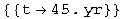
The saucer has travelled a distance d = v t. Calculate the interval which will give the saucer's proper time.
![[Graphics:ps2gr86
.gif]](../../img/SR/problem_set_2/ps2gr86.gif)
![[Graphics:ps2gr87.gif]](../../img/SR/problem_set_2/ps2gr87.gif)
In 27 years time, or 2023, the saucer will note the demise of Earth.
A': Repeat the calculation from the saucer frame. We know the interval is 9 years.
![[Graphics:ps2gr88
.gif]](../../img/SR/problem_set_2/ps2gr88.gif)
![[Graphics:ps2gr89.gif]](../../img/SR/problem_set_2/ps2gr89.gif)
The position will be x = v t = 12 years, which will take another twelve years to return, for a total of 27 years.
Initialization functions
There are a few tools required to solve problems in special relativity using quaternions to characterize events in spacetime. The most basic are a round value for c and gamma.
![[Graphics:ps2gr90
.gif]](../../img/SR/problem_set_2/ps2gr90.gif)
![[Graphics:ps2gr91
.gif]](../../img/SR/problem_set_2/ps2gr91.gif)
Define a function for quaternions using its matrix representation.
![[Graphics:ps2gr92
.gif]](../../img/SR/problem_set_2/ps2gr92.gif)
A quaternion L that transforms a quaternion (L q[x] = q[x']) identical
to how the Lorentz transformation acts on 4-vectors
(Lambda x = x') should exist. These are described in detail in the
notebook "A different al gebra for boosts." For boosts along the x axis with y
= z = 0, the general function for L is
![[Graphics:ps2gr93
.gif]](../../img/SR/problem_set_2/ps2gr93.gif)
Most of the problems here involve much simpler cases for L, where t or x is zero, or t is equal to x.
If t = 0, then
![[Graphics:ps2gr95.gif]](../../img/SR/problem_set_2/ps2gr95.gif)
If x = 0, then
![[Graphics:ps2gr96
.gif]](../../img/SR/problem_set_2/ps2gr96.gif)
![[Graphics:ps2gr97.gif]](../../img/SR/problem_set_2/ps2gr97.gif)
If t = x, then
![[Graphics:ps2gr98.gif]](../../img/SR/problem_set_2/ps2gr98.gif)
![[Graphics:ps2gr99.gif]](../../img/SR/problem_set_2/ps2gr99.gif)
Note: this is for blueshifts. Redshifts have a plus instead of the minus.
The problems are from "Basic Concepts in Relativity" by Resnick and Halliday, 1992 by Macmillian Publishing, "Special Relativity" by A. P. French, 1966, 1968 by MIT, and Prof. M. Baranger of MIT.